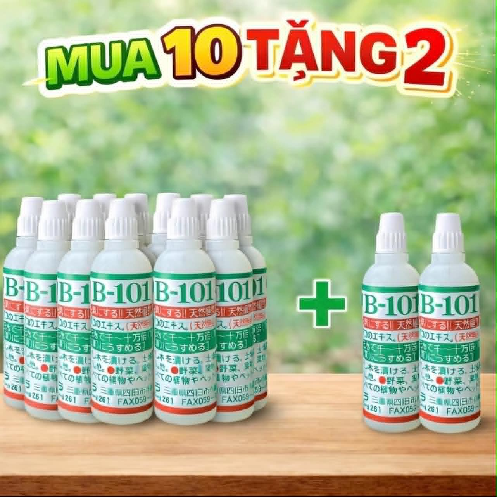

Chuẩn nội địa Nhật
Thành phần chiết xuất tự nhiên, dùng linh hoạt cho nhiều loại cây.
HB101 nội địa Nhật - Giao hàng toàn quốc
Hotline: 09xx xxx xxx
Hàng nội địa Nhật
Giải pháp chăm cây gọn nhẹ cho người mới bắt đầu: dễ pha, dễ tưới, cây hồi nhanh.
Thành phần chiết xuất tự nhiên, dùng linh hoạt cho nhiều loại cây.
Không cần kinh nghiệm chuyên sâu, chỉ pha đúng liều là có thể áp dụng.
Tư vấn cách dùng theo tình trạng cây và mô hình trồng thực tế.
Nhiều chương trình khuyến mại, dễ so sánh nhanh, chốt đơn thuận tiện.
Pha 5 giọt HB101 với 1 lít nước sạch.
Tưới gốc 2-3 ngày/lần hoặc ngâm cành trước khi giâm.
Duy trì 1-2 tuần để cây hồi rễ và bật sức sống tốt hơn.
HB101 là dung dịch kích rễ đậm đặc, phù hợp cho cây cảnh, rau và cây ăn trái. Sản phẩm giúp tăng khả năng hồi phục sau thay chậu, cắt tỉa hoặc thời tiết bất lợi.
Công thức dùng đơn giản, dễ áp dụng ngay tại nhà.
Tối ưu chi phí nhờ liều dùng thấp nhưng hiệu quả rõ.
Có chính sách combo và nội dung hỗ trợ bán hàng.
Kích rễ (cho cây mới trồng hoặc cây chuyển chậu):
Dâm cành:
Phục hồi cây suy yếu, vàng lá, héo rũ:
Điền thông tin để nhận báo giá nhanh, kịch bản bán hàng và chương trình phù hợp.
Phản hồi trong ngày.
Tư vấn theo số lượng nhập.
Hỗ trợ định hướng nội dung đăng bán.